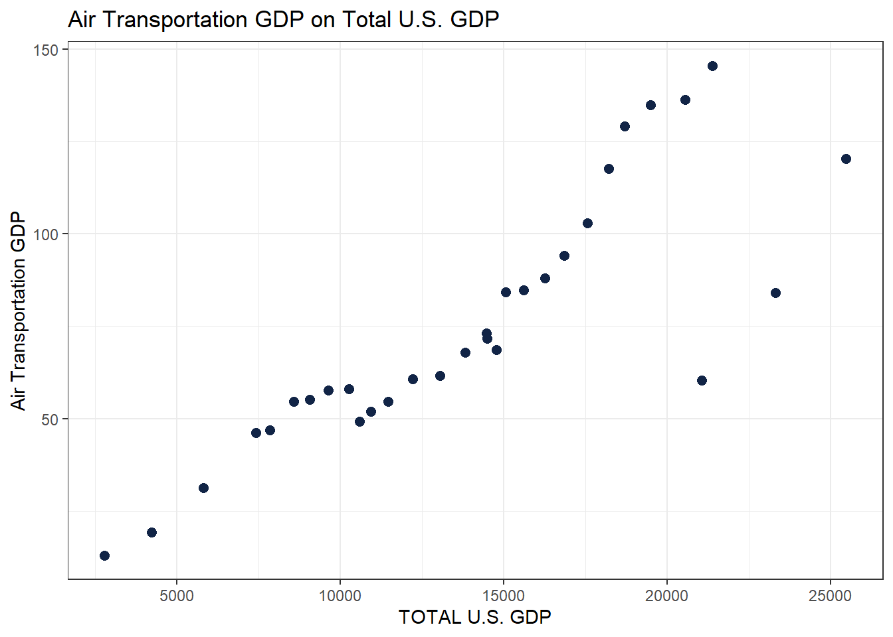
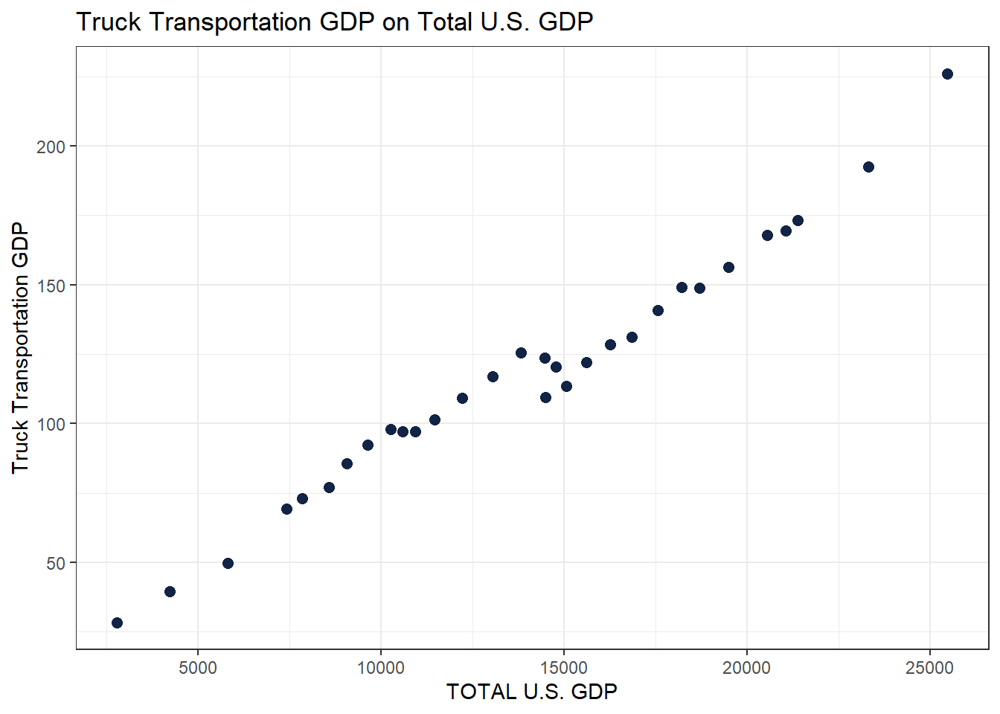
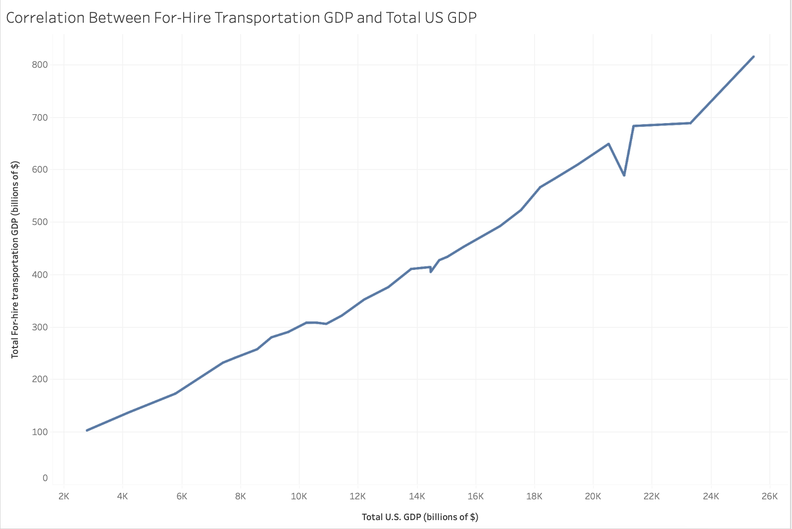
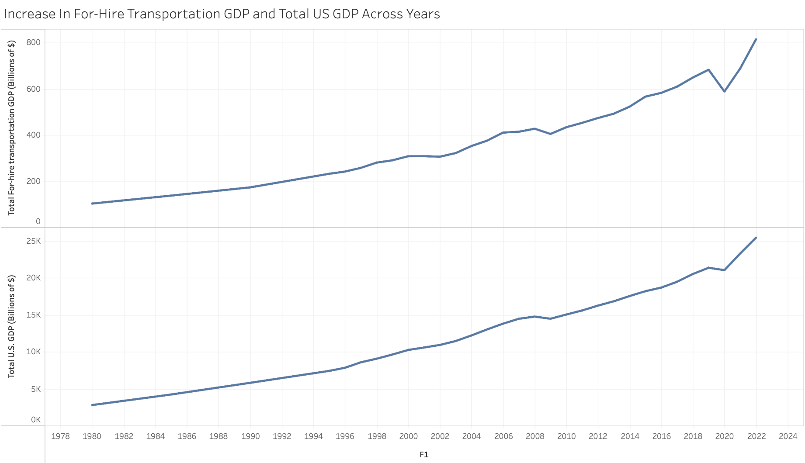

New names:
• `` -> `...1`
• `Air transportation` -> `Air transportation...4`
• `Rail transportation` -> `Rail transportation...5`
• `Water transportation` -> `Water transportation...6`
• `Truck transportation` -> `Truck transportation...7`
• `Transit and ground passenger transportation` -> `Transit and ground
passenger transportation...8`
• `Pipeline transportation` -> `Pipeline transportation...9`
• `Other transportation and support activities` -> `Other transportation and
support activities...10`
• `Warehousing and storage` -> `Warehousing and storage...11`
• `Air transportation` -> `Air transportation...14`
• `Rail transportation` -> `Rail transportation...15`
• `Water transportation` -> `Water transportation...16`
• `Truck transportation` -> `Truck transportation...17`
• `Transit and ground passenger transportation` -> `Transit and ground
passenger transportation...18`
• `Pipeline transportation` -> `Pipeline transportation...19`
• `Other transportation and support activities` -> `Other transportation and
support activities...20`
• `Warehousing and storage` -> `Warehousing and storage...21`
• `Air transportation` -> `Air transportation...23`
• `Rail transportation` -> `Rail transportation...24`
• `Water transportation` -> `Water transportation...25`
• `Truck transportation` -> `Truck transportation...26`
• `Transit and ground passenger transportation` -> `Transit and ground
passenger transportation...27`
• `Pipeline transportation` -> `Pipeline transportation...28`
• `Other transportation and support activities` -> `Other transportation and
support activities...29`
• `Warehousing and storage` -> `Warehousing and storage...30`7 Caleb Pena
7.1 Week 1
1. Correlation Analysis Between For-Hire Transportation GDP & Total U.S. GDP
As the total U.S. GDP has grown over the years—from $7,414.7 billion in 1995 to $25,462.7 billion in 2022—the For-Hire Transportation GDP has also increased, rising from $231.7 billion in 1995 to $815.0 billion in 2022. Despite this growth, the For-Hire Transportation sectors share of the total U.S. GDP has fluctuated between 2.7% and 3.7% during this period. This data indicates that while both the total U.S. GDP and the For-Hire Transportation GDP have expanded at a similar pace, the substantial increase in the For-Hire Transportation GDP over these 28 years has not directly driven the rise in the overall U.S. GDP. However, despite this, there remains a clear correlation between the Total U.S. GDP and the For-Hire Transportation GDP. The data reveals a positive relationship between these two variables: as the Total U.S. GDP increases, the For-Hire Transportation GDP rises as well.
2. Draft Scatter Plots Between Key Transportation Sectors & Total U.S. GDP
library(ggplot2)
ggplot(data_xlsx) +
aes(x = `TOTAL U.S. GDP`, y = `Air transportation...4`) +
geom_point(size = 2.25, colour = "#112446") +
labs(
y = "Air Transportation GDP",
title = "Air Transportation GDP on Total U.S. GDP"
) +
theme_bw()
The scatter plot illustrates a positive correlation between the Air Transportation GDP and the Total U.S. GDP. Over the years, as the Total U.S. GDP has grown, the Air Transportation GDP has shown a similar upward trend. Although there are some notable outliers, the overall relationship between these two variables remains clearly positive.
ggplot(data_xlsx) +
aes(x = `TOTAL U.S. GDP`, y = `Truck transportation...7`) +
geom_point(size = 2.25, colour = "#112446") +
labs(
y = "Truck Transportation GDP",
title = "Truck Transportation GDP on Total U.S. GDP"
) +
theme_bw()
The scatter plot clearly demonstrates a positive correlation between the Truck Transportation GDP and the Total U.S. GDP. As the Total U.S. GDP increases, the Truck Transportation GDP rises accordingly. Notably, there appear to be no visible outliers, as the data points closely align with the potential line of best fit.
7.2 WEEK 3
7.2.1 Summary
As the total U.S. GDP has grown over the years—from $7,414.7 billion in 1995 to $25,462.7 billion in 2022—the For-Hire Transportation GDP has also increased, rising from $231.7 billion in 1995 to $815.0 billion in 2022. Despite this growth, the For-Hire Transportation sectors share of the total U.S. GDP has fluctuated between 2.7% and 3.7% during this period. This data indicates that while both the total U.S. GDP and the For-Hire Transportation GDP have expanded at a similar pace, the substantial increase in the For-Hire Transportation GDP over these 28 years has not directly driven the rise in the overall U.S. GDP. However, despite this, there remains a clear correlation between the Total U.S. GDP and the For-Hire Transportation GDP. The data reveals a positive relationship between these two variables: as the Total U.S. GDP increases, the For-Hire Transportation GDP rises as well.

`
7.3 WEEK 4
7.3.1 Access the Interactive Shiny App
To interact with the Shiny app and explore trends, click the link below:
This data set goes more into depth of the different sections of US Transportation GDP rather than just For-Hire Transportation. The main focuses of the Transportation GDP that the data set explores are personal consumption, private domestic investment, exports, imports, and government-transportation related purchases. The data shows how much of each of these separate sections spend or contribute to the GDP of the US in a dollar amount (billions of $).
7.3.2 Summary
From the data set, we can see that personal contribution is the highest section that contributes to the total GDP of transportation in the US. We can also see that Imports generates more GDP than exports does. The total percentage of the Total US GDP contributed through any means of transportation over the years averages from 7% to 13%, gradually declining as time passed.
7.3.3 Interactive Visualizations Using ggplot2 and plotly
library(readxl)
data_xlsx <- read_excel("FINALTransport.xlsx")New names:
• `Civilian aircraft, engines, and parts` -> `Civilian aircraft, engines, and
parts...16`
• `Automotive vehicles, engines, and parts` -> `Automotive vehicles, engines,
and parts...17`
• `Transport` -> `Transport...18`
• `Civilian aircraft, engines, and parts` -> `Civilian aircraft, engines, and
parts...20`
• `Automotive vehicles, engines, and parts` -> `Automotive vehicles, engines,
and parts...21`
• `Transport` -> `Transport...22`#library(esquisse)
#esquisse::esquisser(data_xlsx)
library(ggplot2)
library(ggpubr)
library(plotly)
Attaching package: 'plotly'
The following object is masked from 'package:ggplot2':
last_plot
The following object is masked from 'package:stats':
filter
The following object is masked from 'package:graphics':
layoutp <- ggplot(data_xlsx) +
aes(x = Year, y = `Personal consumption of transportation`) +
geom_point(size = 2L, colour = "#112446") +
labs(
x = "Year",
y = "Personal Consumption of Transportation GDP (billions of $)",
title = "Personal Consumption GDP (1960-2022)"
) +
theme_linedraw()
p_interactive <- ggplotly(p)
p_interactiveq <- ggplot(data_xlsx) +
aes(x = Year, y = `Gross private domestic investment`) +
geom_point(size = 2L, colour = "#112446") +
labs(
x = "Year",
y = "Private Domestic Investment of Transportation GDP (billions of $)",
title = "Private Domestic Investment GDP (1960-2022)"
) +
theme_linedraw()
q_interactive <- ggplotly(q)
q_interactiver <- ggplot(data_xlsx) +
aes(x = Year, y = Exports) +
geom_point(size = 2L, colour = "#112446") +
labs(
x = "Year",
y = "Exports GDP (billions of $)",
title = "Transportation Exports GDP (1960-2022)"
) +
theme_linedraw()
r_interactive <- ggplotly(r)
r_interactives <- ggplot(data_xlsx) +
aes(x = Year, y = Imports) +
geom_point(size = 2L, colour = "#112446") +
labs(
x = "Year",
y = "Imports GDP (billions of $)",
title = "Transportation Imports GDP (1960-2022)"
) +
theme_linedraw()
s_interactive <- ggplotly(s)
s_interactivet <- ggplot(data_xlsx) +
aes(
x = Year,
y = `Government transportation-related purchases`
) +
geom_point(size = 2L, colour = "#112446") +
labs(
x = "Year",
y = "Government Transportation-Related Purchase GDP (billions of $)",
title = "Government Transport Purchase GDP (1960-2022)"
) +
theme_linedraw()
t_interactive <- ggplotly(t)
t_interactive